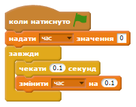
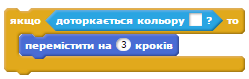

Ви навчитеся програмувати власного робота-співрозмовника!
Крок 1: Ваш робот
Завдання для виконання
Перед тим, як створити свого робота, потрібно придумати йому особистість.
Як його звати?
Де він живе?
Чи він щасливий? Серйозний? Смішний? Сором'язливий? Привітний?
Створіть новий проект у Скретч та видаліть спрайт кота, так щоб проект став пустим. Онлайн Скретч-редактор за посиланням jumpto.cc/scratch-new
Виберіть одного з цих персонажів, і додайте його до проекту:
screenshot
Виберіть фон, який пасуватиме до вашого робота. Він може бути таким, але ви можете вибрати будь-який інший:
screenshot
Збережіть свій проект
Крок 2: Балакучий робот
Тепер, коли ваш робот має свою особистість, давайте запрограмуємо його для розмови.
Завдання для виконання
Натисніть на спрайт робота, та додайте цей код:
screenshot
Клацніть по роботу, щоб перевірити його. Коли він запитає ваше ім'я, надрукуйте його в поле в нижній частині сцени.
screenshot
Ваш робот просто відповідає кожного разу Яке гарне ім'я!. Ви можете персоналізувати відповідь вашого робота, використовуючи відповідь користувача. Змініть код робота, щоб він виглядав наступним чином:
screenshot
Щоб створити останній блок, потрібно спочатку потягнути зелений блок з'єднати, і помістити його в блок говорити.
screenshot
Після цього можна змінити текст hello на Привіт, і перетягнути блакитний блок відповідь (з розділу "Датчики") на текст world
screenshot
Протестуйте свою нову програму. Чи працює вона так, як ви очікували? Як ви можете вирішити проблеми, які побачили? (Підказка: спробуйте десь додати пробіл!)
Можливо, ви хочете зберегти ім'я користувача в змінній, щоб мати можливість використовувати його пізніше. Створіть нову змінну ім'я.
Інформація, яку ви ввели (тобто ваше ім'я), вже зберігається в спеціальній змінній відповідь. Відкрийте вкладку "Датчики" і клацніть по сірому квадратику біля змінної "відповідь", так щоб з'явилась галочка. Тепер актуальне значення відповіді має з'явитися у верхньому лівому кутку сцени.
Після того як ви створили нову змінну, переконайтеся, що код вашого робота виглядатиме ось так:
screenshot
Якщо ви перевірите програму ще раз, ви помітите, що відповідь зберігається в змінній ім'я і відображається у верхньому лівому кутку сцени. Змінна ім'я тепер має містити те ж значення, що і змінна відповідь.
screenshot
Якщо ви не хочете бачити змінні на сцені, натисніть на галочку поруч із назвою змінної на владці "Скрипти", щоб приховати її.
Збережіть свій проект
Виклик: Більше запитань
Запрограмуйте вашого робота Балакуна, так щоб він ставив й інші запитання. Чи можете ви записати нові відповіді в змінні?
screenshot
Крок 3: Прийняття рішень
Ви можете запрограмувати робота так, щоб він на основі ваших відповідей сам вирішував, що йому робити.
Завдання для виконання
Давайте зробимо так, щоб робот ставив запитання, на яке можна відповісти так чи ні. Наприклад таке, як показано нижче, але якщо ви хочете, ви можете змінити запитання:
screenshot
Зверніть увагу, що тепер, коли ви зберегли ім'я користувача в змінній, ви можете використовувати його стільки, скільки хочете.
Для того, щоб протестувати цю програму правильно, потрібно перевірити її двічі - один раз ввівши відповідь ні, а вдруге набравши так. Ви повинні отримати відповідь, тільки якщо ваша відповідь була так.
Проблема з вашим роботом в тому, що він не дає відповіді, якщо користувач відповідає ні. Ви можете це виправити замінивши блок якщо на якщо/інакше, так що ваш код виглядатиме тепер так:

screenshot
При перевірці ваш коду, ви побачите, що зараз ви отримуєте відповідь відповівши так або ні. Ваш робот повинен відповісти Приємно це чути! коли ви відповідаєте так, але відповість Ой, як шкода!, якщо ви напишете щось інше, ніж так (інакше означає "в іншому випадку").
screenshot
Ви можете помістити будь-який код всередині блоків якщо та інакше, а не лише код для відповідей робота. Наприклад, можна змінювати костюм робота для кожної з відповідей.
Якщо ви подивитесь на костюми вашого робота, ви побачите, що їх там більше, ніж один. (А навіть якщо їх немає, то ви завжди можете додати свої власні!)
screenshot
Ви можете використовувати ці образи як частину відповіді робота, додавши наступний код:

screenshot
Перевірте вашу програму, ви повинні побачити, як обличчя вашого робота змінюється залежно від того, яку ви даєте відповідь.
screenshot
Виклик: Більше рішень
Запрограмуйте вашого робота Балакуна таким чином, щоб він задавав більше запитань з можливими відповідями так чи ні. Чи можете ви зробити так, щоб робот вам також відповідав?
screenshot
Крок 4: Зміна локації
Також можна запрограмувати робота, щоб він перемістився на іншу локацію.
Завдання для виконання
Додайте ще одне тло до вашої сцени, наприклад "місяць".
screenshot
Тепер ви можете запрограмувати вашого робота, щоб він змінював локацію, додавши до нього цей код:
screenshot
Ви також повинні переконатися, що ваш робот знаходиться зовні, коли ви починаєте говорити до нього. Додайте цей блок до верхньої частини скрипту робота:
screenshot
Перевірте вашу програму. Відповідайте так, коли вас запитують, чи хочете ви полетіти на місяць. Місцезнаходження робота має змінитися.
screenshot
Чи змінює ваш робот локацію, якщо ви відповідаєте ні? А якщо ви відповісте я не впевнений?
Ви також можете додати цей код до вашого блоку якщо, для того щоб ваш робот стрибав вгору і вниз 4 рази, якщо отримає відповідь так:
screenshot
Перевірте ваш код ще раз. Чи підстрибує ваш робот вгору і вниз, якщо ви відповідаєте так?
Виклик: Створи власного робота
Використовуйте те, чому навчились, щоб завершити створення інтерактивного робота. Ось деякі ідеї:
screenshot
Коли ви закінчите робота, попросіть ваших друзів поговорити з ним! Чи подобається їм ваш персонаж? Чи помітили вони будь-які проблеми?